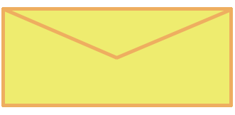

It’s really strange, no matter how many times I tell myself that I want to disappear and rot away, something just keeps pushing me forward. Even when everything’s at a standstill, I still want to live.
Maybe I should write something to Eric, it’s a little awkward to say something after weeks of no communication, but I might as well try.

Well, the letter’s awkward, but what’s done is done.
A few days later, I received an envelope.
I’m not sure if it’s right or wrong to feel this way but, I was really moved by his words. The letter wasn’t anything groundbreaking, but it felt really good to read it.
It’s as if a giant weight had been lifted off of my shoulders.
I really want to meet him…
I proposed a meet-up at the usual spot, the hill overlooking the city. He accepted without hesitation.
Finally, I’m ready to leave, despite the danger…